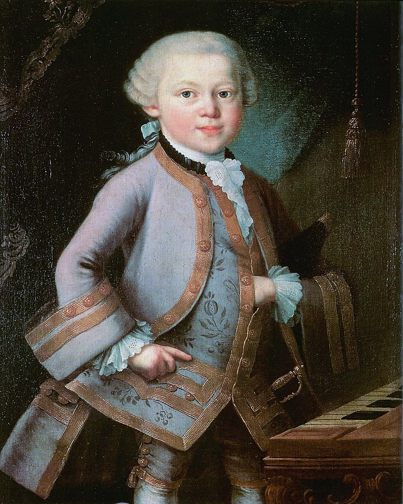
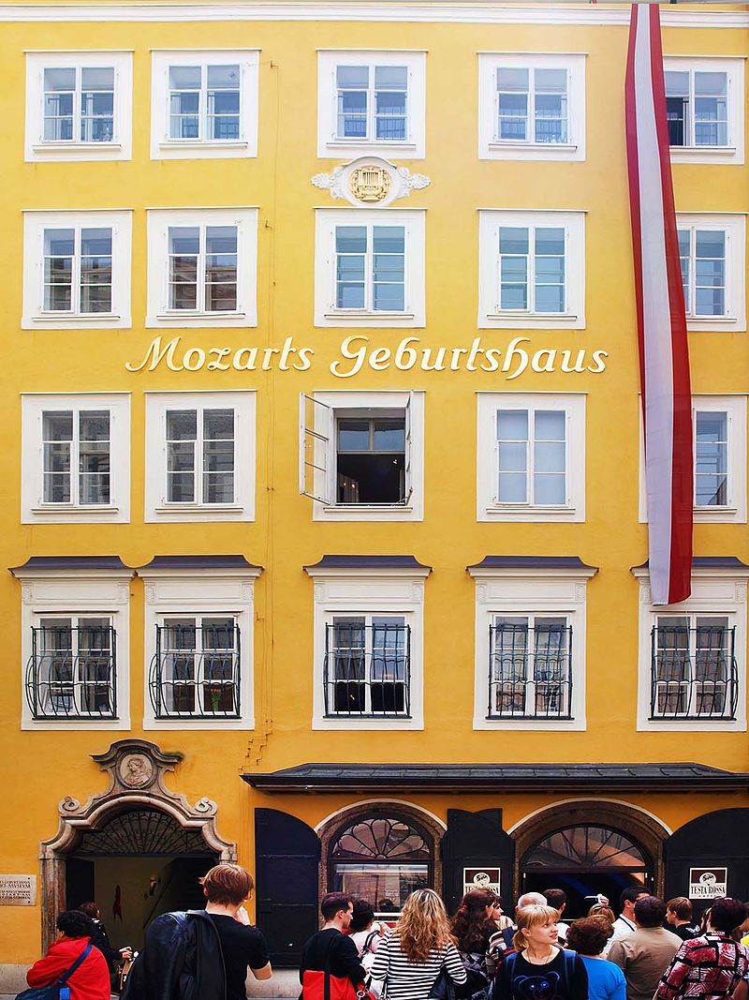
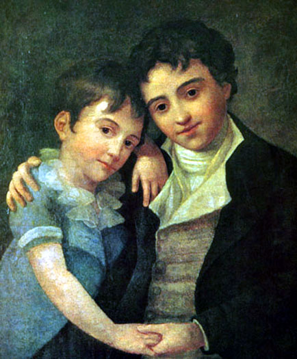

1762—1773: Роки подорожей
У роки зростання Моцарта його родина здійснила декілька подорожей Європою, під час яких дітей виставляли на показ як вундеркіндів. Це почалося в Мюнхені з представлення у 1762 році при Дворі курфюрста
Баварії, згодом у цьому ж році при Імператорському дворі у Відні та Празі. Услід за цим пройшов довгий концертний тур протягом трьох років, під час якого родина побувала при дворах у Мюнхені, Мангаймі,
Парижі, Лондоні та Гаазі. Моцарт зустрівся з багатьма музикантами та ознайомився з роботами інших композиторів. Особливо вплинув на нього Йоганн Крістіан Бах, який зустрівся з Моцартом у Лондоні у 1764-65
роках. Родина знову повернулася до Відня наприкінці 1767 року та залишалась там до грудня 1768 року. Під час цієї подорожі Моцарт захворів на натуральну віспу, тому що батько до цього відмовився робити
йому варіоляцію, вірячи, що на те має бути «воля Божа» — вмерти хлопцеві чи жити.
Після одного року, проведеного в Зальцбурзі, відбулося три подорожі до Італії (грудень 1769 — березень 1771, серпень — грудень 1771 та жовтень 1772 — березень 1773), цього разу тільки з Леопольдом, мати Вольфґанґа та його сестра залишились вдома. Перша подорож нагадувала попередні, її головною метою було продемонструвати можливості Моцарта, тепер уже підлітка, як виконавця і композитора, що швидко дорослішає. У Болоньї Моцарт познайомився з Дж. Б.Мартіні і був прийнятий у члени відомої Філармонічної академії. 11 квітня 1770 року в Римі він з батьком відвідав суботню передвеликодню месу в Сикстинській капелі, де він почув «Miserere» Ґреґоріо Аллеґрі, а потім записав цей твір нотами повністю з пам'яті, припустившись лише декількох незначних помилок, таким чином зробивши першу нелегальну копію цієї власності Ватикану, що ретельно охоронялася. Невдовзі Моцарт був удостоєний аудієнції папи Климента XIV; вражений талантом 14-річного музиканта, папа нагородив його однією з найвищих католицьких відзнак — Орденом Золотої шпори.
У Мілані Моцарт написав оперу «Mitridate Re di Ponto» (1770), що виконувалася з великим успіхом. Це привело до подальших замовлень опер, і Вольфґанґ з Леопольдом двічі поверталися із Зальцбурга до Мілана для написання, а потім — щоб відвідати прем'єри опер «Асканіо в Альбі» (1771) та «Лучіо Сілла» (1772).
Ближче до кінця останньої італійської подорожі Моцарт написав перший із творів, що і сьогодні широко виконується — мотет із сопрановим соло — «Exsultate, jubilate», К.165.
|  |
можливо 1763 рік |
1773—1777: Зальцбурзький Двір
Після остаточного повернення з батьком із Італії Моцарт був найнятий на посаду придворного музиканта правителем Зальцбурга принцом-архієпископом Ієронімусом Коллоредо. Моцарт був «улюбленим сином» в Зальцбурзі, де у нього було безліч друзів та прихильників, і він мав можливість писати музику в багатьох жанрах, включаючи симфонії, сонати, струнні квартети, серенади та інколи опери. Деякі з творів, написаних у той час, широко виконуються і в наш час.
Попри цей незаперечний успіх, Моцарт ставав все більш незадоволений Зальцбургом і дедалі енергійніше робив спроби знайти роботу десь в іншому місці. Однією з причин цього була низька зарплатня, 150 флоринів на рік. Крім того, Моцарт прагнув писати опери, а в Зальцбурзі рідко траплялася нагода для цього.
Це довге перебування у Зальцбурзі перервали дві подорожі в пошуках роботи: Вольфґанґ з Леопольдом (обидва шукали роботу) поїхали до Відня з 14 липня по 26 вересня 1773 року та до Мюнхена з 6 грудня 1774 року по березень 1775 року. Жодна з цих поїздок не була успішною, хоча мюнхенська подорож завершилась вдалою прем'єрою опери Моцарта «Удавана садівниця» («La finta giardiniera»).
|  |
В. А. Моцарт. Зальцбург, Ґетрайдеґассе, 9. |
1777—1778: Паризька подорож
23 вересня 1777 року Моцарт розпочав новий тур у пошуках роботи, цього разу разом із своєю матір'ю Анною Марією. Цей візит пролягав через Мюнхен, Мангайм та Париж. В Мангаймі він познайомився з музикантами Мангаймського оркестру, найкращого в Європі на той час. Він також закохався в Алоїзію Вебер, одну з чотирьох дочок з музичної родини. Моцарт переїхав до Парижа і спробував там зробити кар'єру, але безуспішно (він отримав роботу органіста у Версалі, але це не було те, чого він прагнув). Паризька подорож була особливо нещасливою, тому що мати Моцарта захворіла і померла 23 червня 1778 року. По дорозі додому, у Зальцбург, Моцарт знову проїжджав через Мюнхен, де Алоїзія, що тепер вже працювала оперною співачкою, повідомила, що більше не зацікавлена в ньому. Розчарування Зальцбургом продовжилося після повернення Моцарта.
Виникає питання, чому Моцарт, незважаючи на свій талант, не зміг знайти роботу під час цієї подорожі. Існує думка, що проблема була в конфлікті між Вольфґанґом та його батьком Леопольдом, який наполягав на тому, щоб Моцарт знайшов високооплачувану роботу, яка б дозволила підтримувати всю родину. На думку Вольфґанґа, було б краще осісти у великому місті, працювати вільно найманим мистцем і поступово здобути популярність серед аристократії, аби отримати пізніше важливу роботу. Раніше така стратегія добре спрацювала з іншими музикантами, наприклад з Йозефом Гайдном.
1781: Переїзд до Відня
У січні 1781 року в Мюнхені зі значним успіхом відбулася прем'єра опери Моцарта «Ідоменей, цар Критський» («Idomeneo»). У березні композитора було викликано до Відня, де його роботодавець, принц-архієпископ Коллоредо Зальцбурзький, брав участь у святкуваннях, присвячених сходженню на трон імператора Йозефа ІІ. Моцарт, який щойно мав великий успіх у Мюнхені, був ображений тим, що Коллоредо поводився з ним, як із простим слугою, й особливо, коли архієпископ заборонив йому виступити перед імператором (за плату, яка дорівнювала б половині його річної зарплатні в Зальцбурзі). У травні спричинена цим напруга посилилася: Моцарт спробував звільнитись, але йому було відмовлено. Однак через місяць запізнілий дозвіл було надано, але в дуже образливій формі: Моцарта звільнили буквально «копняком під зад». У той самий час Моцарт шукав можливості знайти гарну роботу у Відні, і він відчував, що має оселитися там і розпочати власну кар'єру вільного найманця.
Сварка з Коллоредо підсилювалась тим, що батько Моцарта схилявся на бік архієпископа, надсилаючи безліч гнівних листів синові з вимогою працювати на Коллоредо, тоді як сам Вольфґанґ наполягав на своєму бажанні розпочати власну кар'єру у Відні наодинці. Дебати скінчились, коли Моцарт звільнився з роботи, тим самим вивільнившись одночасно від гнітючого роботодавця та від батькових вимог повернутися. Це стало революційним кроком на життєвому шляху Моцарта і мало важливий вплив на його подальшу долю.
 |
Кармонтель, 1763 рік. |
Початок кар'єри у Відні
Нова кар'єра Моцарта у Відні розпочалася дуже добре. Він часто виступав як піаніст і незабаром показав себе найкращим клавішним музикантом у Відні. Ще у розпалі своєї сварки з архієпископом Коллоредо Моцарт переїхав з родиною Веберів з Манґайма до Відня. В цей час батько, Фредолін Вебер, помер, і родина ледь зводила кінці з кінцями. Алоїзія, що раніше відмовила Вольфгангу, тепер була одружена з актором Йозефом Ланге, і Моцарт перевів свій погляд на третю дочку, Констанцію. Ця пара одружилася 4 серпня 1782 року. Вони мали шістьох дітей, з яких тільки двоє вижили: Карл Томас (1784—1858) та Франц Ксавер Вольфганг (1791—1844; згодом теж став композитором, 17 літнім переїхав до Львова, де пізніше створює музичне товариство св. Цецилії, а також інститут співу, що фактично став першою музичною школою у місті).
Протягом 1782—1783 років Моцарт, за допомогою та під впливом барона Готтфріда ван Світена, який володів багатьма манускриптами творів майстрів бароко, близько ознайомився з працями Й. С. Баха та Г. Ф. Генделя. Вивчення Моцартом цих творів спершу спричинило появу багатьох творів, що імітували стиль бароко, а згодом мало потужний вплив на створення власної музичної мови Моцарта.
У 1783 році Вольфґанґ та Констанція відвідали родину Моцарта в Зальцбурзі, але цей візит не був успішним, тому що Леопольд та Наннерл були просто ввічливими з Констанцією. Однак цей візит вибухнув написанням однієї з найкращих літургійних п'єс Моцарта, «Меси до мінор», прем'єра якої, хоча й незавершеної, відбулася в Зальцбурзі; Констанція співала на прем'єрі.
Через деякий час по переїзді до Відня Моцарт познайомився з Йозефом Гайдном, і ці двоє композиторів потоваришували. Коли Гайдн приїздив до Відня, вони інколи грали разом в імпровізованому струнному квартеті. Гайдн був у захваті від Моцарта; коли він вперше почув останні три цикли Моцарта, він сказав, відвідавши Леопольда: «Перед ім'ям Господа і як чесна людина, я кажу Вам, що Ваш син — найвеличніший композитор для мене, якого я знаю особисто чи на ім'я. Він має смак, більш того, має чудове знання мистецтва композиції».
Протягом 1782—1785 років Моцарт дав цикл концертів, під час яких він виступив як соліст на власних фортепіанних концертах. Він написав від трьох до чотирьох концертів для кожного концертного сезону, і через те, що концертні зали були зайняті, він орендував незвичні приміщення: велику кімнату у будинку апартаментів Тратнергоф і бальну кімнату в ресторані Мельгрубе. Концертні сезони були дуже популярні і концерти, написані для них Моцартом, вважаються одними з найкращих його творів.
14 грудня 1784 року Моцарт став масоном, увійшовши до масонської ложі «Wohltätigkeit» («Благодійність»). Вільне масонство відіграло важливу роль у подальшому житті Моцарта; він відвідував численні зібрання, частина його друзів були масонами, і з різних приводів він писав масонську музику. Моцарт поселився 1784 на Домгассе 5, де прожив 3 роки і де відкрито музей його імені.
1786—1787: Повернення до опери
|  |
| Сини Вольфґанґа Амадея Моцарта: Карл Томас (праворуч) та Франц Ксавер (ліворуч) (малюнок Ганса Гансена, Відень, 1800) |
Незважаючи на великий успіх опери «Викрадення із сералю», Моцарт мало писав опери протягом наступних років, створивши тільки дві незавершені роботи та одноактну оперу «Директор театру». Замість цього він зосередився на своїй кар'єрі соліста піаніста та автора концертів. Однак у кінці 1785 року Моцарт замість регулярного написання фортепіанних концертів розпочав свою оперну співпрацю з лібретистом Лоренцо да Понте. У 1786 році у Відні відбулася достатньо успішна прем'єра «Весілля Фігаро», яка пізніше у тому ж році була навіть ще успішнішою у Празькій постановці. Празький успіх привів до замовлення другої опери Моцарта — Да Понте: «Дон Жуан», прем'єра якої зірвала оплески у 1787 році в Празі, і її знову поставили з таким же успіхом у Відні в 1788 році. Обидві опери належать до найважливіших творів Моцарта і до сьогодні вважаються основою оперних репертуарів; їхня музична складність викликала труднощі на прем'єрах як у виконавців, так і у слухачів.
У грудні 1787 року Моцарт нарешті отримав надійну посаду під аристократичним патронажем. Імператор Йозеф II призначив його своїм «камерним композитором», ця посада звільнилася після смерті Ґлюка. Однак це не була постійна робота, за неї Моцарт отримував тільки 800 флоринів на рік, і це змушувало його писати музику до танців для щорічних балів у Редутензалі. Моцарт скаржився Констанції, що «платня була завелика як для того, що він робив, і замала як для того, що він міг би зробити». Однак згодом, коли настали насправді скрутні часи, виявилось, що і це було дуже добре. Дворові записи показують, що наміром Йосифа було мати впевненість у тому, що Моцарт, якого він поважав, не залишить Відень у пошуках кращого місця деінде.
У 1787 році молодий Людвіг ван Бетховен приїхав до Відня на два тижні з надією повчитися у Моцарта. Свідчення про те, що трапилось під час цього візиту, суперечливі, і розглядають принаймні дві гіпотези: що Моцарт прослухав Бетховена і похвалив його, і що Моцарт відмовився навчати Бетховена, і вони після цього більше не зустрічалися.
1788—1791
Ближче до кінця десятиріччя кар'єра Моцарта пішла на спад. Приблизно у 1786 році він перестав часто з'являтися на публічних концертах, і його достаток помітно зменшився. Це взагалі був важкий час для музикантів у Відні, тому що між 1788 та 1791 роками Австрія була у стані війни (Австрійсько-турецька війна), через це знизились одночасно і загальний рівень заможності, і можливість аристократів підтримувати музику.
У середині 1788 року Моцарт з родиною переїхав із центру Відня у дешевші апартаменти в передмісті. Моцарт почав позичати гроші, здебільшого у свого друга-масона Міхаеля Пушберга. У цей час він страждав від депресії, його продуктивність теж знизилася. Основні роботи цього періоду включають останні три симфонії (39, 40, 41) 1788 року і останню з трьох опер Да Понте, «Cosi fan tutte», прем'єра якої відбулася у 1790 році. У цей час Моцарт багато подорожував, сподіваючись поліпшити свій фінансовий стан: навесні 1789 року він відвідав Лейпциґ, Дрезден та Берлін, а у 1790 році побував у Франкфурті, Мангаймі та інших німецьких містах. Ці подорожі мали лише частковий успіх, який не вирішував фінансових проблем Моцарта.
Останній рік життя Моцарта, до того, як хвороба остаточно вразила його, був роком величезної продуктивності і особистого відновлення. У цей період Моцарт написав дуже багато музики, включаючи деякі з його найкращих робіт: опера «Чарівна флейта», фінальний фортепіанний концерт К.595, концерт для кларнета К.622, останній з чудової серії струнних квінтетів к.614, мотет «Ave verum corpus» К.618 і незавершений «Реквієм» К.626.
Фінансовий стан Моцарта, який у 1790 році був головним джерелом його неспокою, також почав покращуватися. За деякими джерелами, в Угорщині та в Амстердамі знайшлися заможні шанувальники Моцарта, які зобов'язалися сплачувати йому щорічну ренту в обмін на написання час від часу деяких творів. Моцарт також заробив непогані гроші на продажу танцювальної музики, яку він написав, працюючи імператорським камерним композитором. Він перестав позичати великі суми у Пушберга і почав повертати свої борги.
Нарешті Моцарт зміг відчути задоволення від публічного успіху деяких своїх творів, зокрема «Чарівної флейти» (яку ставили багато разів навіть за той короткий період між своєю прем'єрою та смертю Моцарта) і «Маленької масонської кантати» К.623, прем'єра якої відбулася 15 листопада 1791 року.
Хвороба і смерть
Моцарт захворів, коли перебував у Празі на прем'єрі своєї опери «Милосердя Тіта» («La clemenza di Tito»), написаної на замовлення у 1791 році для коронаційних святкувань імператора. Ще якийсь час він зміг виконувати професійні функції, наприклад, проводити прем'єру «Чарівної флейти» 30 вересня. Хвороба посилилася 20 листопада, коли Моцарт вже не зміг вставати з ліжка, страждаючи від набряків, болю та блювання. За ним доглядали Констанція, її молодша сестра Софі та сімейний лікар Томас Франц Клоссет. Є свідчення, що Моцарт був буквально схиблений на ідеї закінчити свій «Реквієм», але докази того, що він фактично надиктував пасажі Зюсмайру, дуже непевні.
Моцарт помер о 1-й годині ранку 5 грудня 1791 року. Згідно з тогочасною віденською традицією, його поховали 7 грудня в загальній могилі на цвинтарі Святого Марка за містом, тому наразі розташування його могили невідоме.
Причина смерті Моцарта на сьогодні не може бути названа напевно. Існує багато припущень, які включають трихінельоз, отруєння ртуттю, хворобу нирок з розвитком ниркової недостатності. Поширену на той час медичну практику кровопускання називають можливою причиною погіршення перебігу хвороби. Однак найвірогіднішою вважають версію, що Моцарт помер від ревматизму; починаючи з дитинства, у нього три чи чотири рази були напади цієї хвороби, яка має тенденцію повертатися, щоразу здатна спричинити надзвичайно згубні наслідки, в першу чергу, такі як ушкодження серцевих клапанів з формуванням набутої вади серця та нирок з утворенням специфічного нефриту, внаслідок чого можливе утворення хронічної серцевої та ниркової недостатності.
Скромне поховання Моцарта не відбиває ставлення суспільства до нього як до композитора: панахида та концерти у Відні та Празі були добре організовані. Навпаки, в період після смерті Моцарта його музична репутація постійно зростала, була безпрецедентна хвиля ентузіазму щодо його роботи. Шліхтенгроль, Нємецек та Ніссен написали біографії, а видавці змагалися за право видати повне зібрання його творів.
Поховання Моцарта відбулося за затвердженим тогочасним законом про поховання осіб відповідно до їхнього місця в суспільній ієрархії при житті. На жаль, невисоке походження батька Моцарта спричинило низьке місце в житті (батько — слуга в палаці єпископа Зальцбурга) і відповідно скромне поховання після смерті.
Скромне поховання Моцарта цілком компенсоване великою і цілком заслуженою славою композитора століттями після смерті.